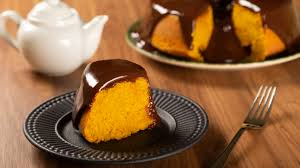
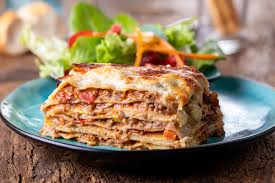
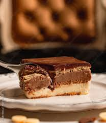

Bolo de Cenoura
Ingredientes:
Massa
- 1/2 xícara (chá) de óleo
- 4 ovos
- 2 e 1/2 xícaras (chá) de farinha de trigo
- 3 cenouras médias raladas
- 2 xícaras (chá) de açúcar
- 1 colher (sopa) de fermento em pó
Cobertura
- 1 colher (sopa) de manteiga
- 1 xícara (chá) de açúcar
- 3 colheres (sopa) de chocolate em pó
- 1 xícara (chá) de leite
Modo de Preparo:
- Em um liquidificador, adicione a cenoura, os ovos e o óleo, depois misture.
- Acrescente o açúcar e bata novamente por 5 minutos.
- Em uma tigela ou na batedeira, adicione a farinha de trigo e depois misture novamente.
- Acrescente o fermento e misture lentamente com uma colher.
- Asse em um forno preaquecido a 180° C por aproximadamente 40 minutos.
- Despeje em uma tigela a manteiga, o chocolate em pó, o açúcar e o leite, depois misture.
- Leve a mistura ao fogo e continue misturando até obter uma consistência cremosa, depois despeje a
calda por cima do bolo.
Sopa de Legumes
Ingredientes:
- 2 batatas descascadas em cubos
- 2 chuchus descascados em cubos
- 1 xícara de brócolis cozido
- 1 xícara de espinafre
- 2 dentes de alho picados
- 2 colheres (chá) de gengibre picadinho
- 2 cubos de caldo de legumes
- salsinha e cebolinha
- 1 cenoura grande sem casca em cubos
- 1 cebola picada
- 1 tomate picado
- 1 e 1/2 litro de água
Modo de Preparo:
- Em uma panela colocar a água, caldo de legumes e cozinhar os legumes, tomate, gengibre.
- Refogar no óleo ou azeite o alho e a cebola e acrescentar na panela juntamente com o brócolis,
salsinha e cebolinha.

Lasanha à Bolonhesa
Ingredientes:
- 500 g de massa de lasanha
- 2 caixas de creme de leite
- 3 colheres de farinha de trigo
- 500 g de mussarela
- 2 copos de leite
- 3 colheres de óleo
- 3 dentes de alho amassados
- 500g de carne moída
- 3 colheres de manteiga
- 500g de presunto
- sal a gosto
- 1 cebola ralada
- 1 caixa de molho de tomate
- 1 pacote de queijo ralado
Modo de Preparo:
Lasanha
- Cozinhe a massa segundo as orientações do fabricante, despeje em um refratário com água gelada para
não grudar e reserve.
Molho à bolonhesa
- Refogue o alho, a cebola, a carne moída, o molho de tomate, deixe cozinhar por 3 minutos e reserve.
Molho branco
- Derreta a margarina, coloque as 3 colheres de farinha de trigo e mexa.
- Despeje o leite aos poucos e continue mexendo.
- Por último, coloque o creme de leite, mexa por 1 minuto e desligue o fogo.
Montagem
- Despeje uma parte do molho à bolonhesa em um refratário, a metade da massa, a metade do presunto, a
metade da mussarela, todo o molho branco e o restante da massa.
- Repita as camadas até a borda do recipiente.
- Finalize com o queijo ralado e leve ao forno alto (220° C), preaquecido, por cerca de 20 minutos.

Pavê de Chocolate
Ingredientes:
- 1 pacote de bolacha maisena
- 1 colher (sobremesa) de chocolate em pó
- 1/2 copo de leite
Creme branco
- 1 lata de leite condensado
- 1 colher (sobremesa) de amido de milho
- 1 lata de leite de vaca (use a medida da lata de leite condensado)
- 2 gemas
Creme de chocolate
- 1 lata de leite condensado
- 1 colher (sobremesa) de amido de milho
- 4 colheres de chocolate em pó
- 1 lata de leite de vaca (a medida da lata de leite condensado)
- 2 gemas
Cobertura
- 4 claras
- 1 lata de creme de leite sem soro
- 4 colheres de açucar
Modo de Preparo:
- Em uma tigela, misture o leite e o chocolate em pó até que esteja completamente dissolvido.
- Molhe as bolachas no leite e reserve.
Creme branco
- Em uma panela, leve todos os ingredientes ao fogo médio e misture até obter uma consistência grossa
e cremosa.
Creme de chocolate
- Repita o processo feito no creme branco.
Cobertura
- Bata as claras em neve com o açucar até obter um creme consistente, adicione o creme de leite e
misture delicadamente.
Montagem
- Em um refratário grande, despeje o creme branco, metade das bolachas, creme de chocolate, bolachas e
claras em neve.
- Repita o processo até preencher todo o refratário e leve à geladeira por 40 minutos.